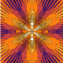

worldoptimization
[snip]

jadagul
[snip]
shadowpeoplearejerks
Is something wrong with my Tumblr?
Why are you both typing alieve?
ogingat
marry me
worldoptimization
“deep down they feel like they’re good at math”
… okay that does sound less stupid